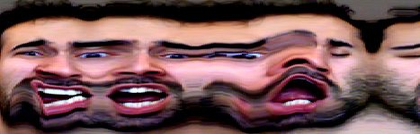

DIEGO F. GOBERNA
Random Experiments
Since the ZX Spectrum, I've been hooked to digital graphics, 2D and 3D software, procedural algorithms and techniques. Whenever I have the chance I love to experiment and make prototypes, algorithms or tools (I love making tools for graphics!).
This is a compendium of random tests and experiments I made along the years (some very old), and will try to keep updated.
Slit-Scan effect
Trying the slit-scan effet, using Apple's Quartz Composer. Artistic visualization of a single neuron in Houdini
The authors of a psychophysiological experiment at the local University asked me to make artistic renderings of a sample of their data, four recordings of the electrical activity of a single neuron.
Houdini proved to be the best tool to manage this task. The first image corresponds to the raw data normalized and rendered in grayscale.


{kind=link}
{kind=link}


"House of Cards" in Houdini
When Radiohead released their LIDAR-based videoclip for the song "House of Cards", they also released some point cloud data so everybody could play with them (link). I converted the CSV files to OBJ and played with them in Houdini.